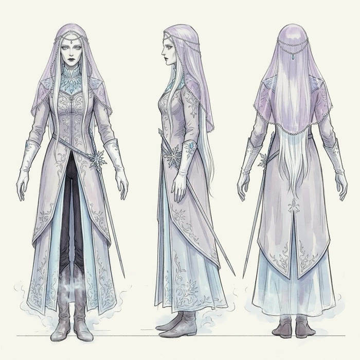
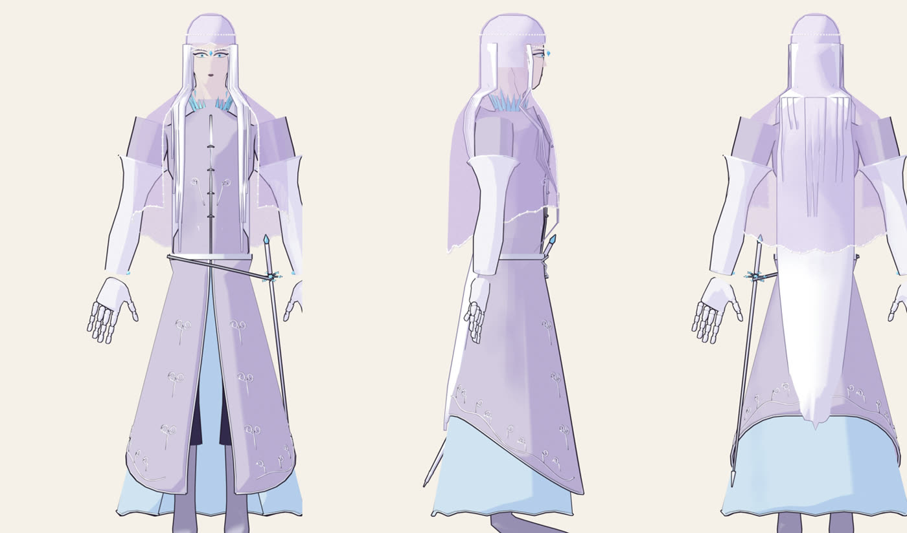
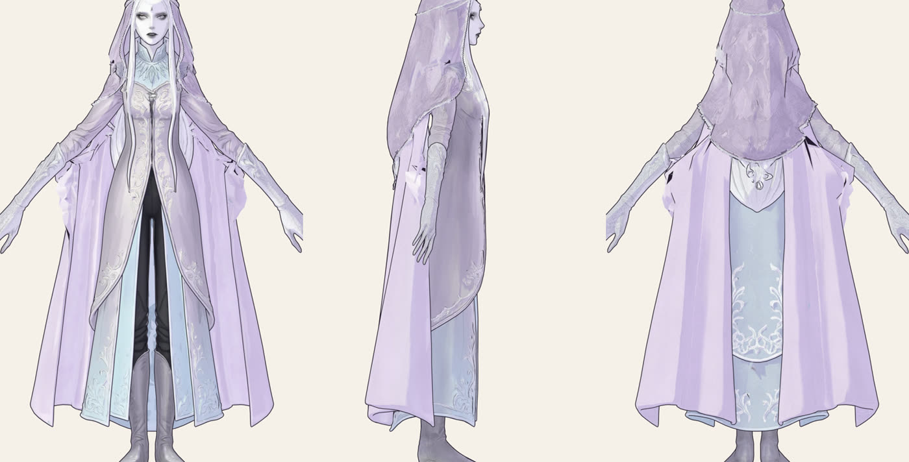
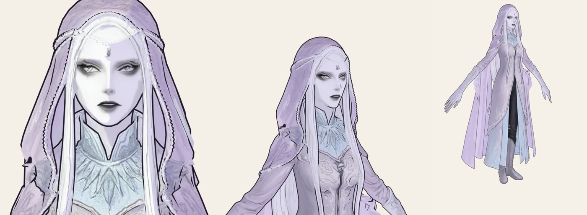

Hollow devlog · Nov 18, 2026
Character Evolution: Quinn Ashe
Quinn Ashe, the Frost Widow, in three stages: the concept sheet, the first model (Nov 17) and the new model (Nov 18).
1. Concept
- A turnaround from the front, side and back on one sheet.
- A long lilac coat over a pale blue underskirt, a sheer veil held by a chain circlet, long white hair, an ice-crystal collar, and a slim sword with a snowflake guard.

2. First model (Nov 17)
- Built entirely by a Python script in Blender from the concept sheet. Every garment is simple low-poly geometry.
- Toon shading with lilac shadows and ink outlines, on the game's mannequin skeleton.
- Skinned to that skeleton, so the game's animations play on it unchanged.

3. New model (Nov 18)
- Generated from the concept with an image-to-3D tool, then fitted onto the game skeleton automatically by the new character toolkit.
- The mesh was reduced from 1.07 million to 60,000 triangles.
- Skin weights are taken from a sculpted female base body (Quaternius Universal Base Characters). Loose cloth and hair hang from the trunk, never an arm.
- 18 spring chains (7 hair, 7 cape, 4 skirt), for 115 bones in total. The 65 game bones are unchanged, so every game clip and film move still fits.

